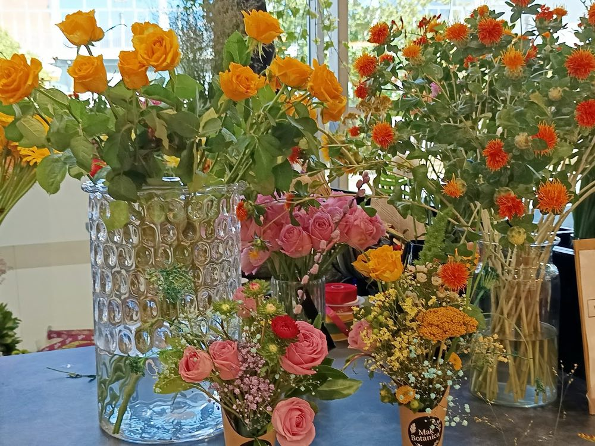

01 · Buketi
Buket s karakterom.
Za rođendan, godišnjicu, zahvalu ili samo zato. Slažemo ga od svježeg cvijeća koje je upravo u cvjećarnici, često od sorti koje se rijetko viđaju: celozije, eryngiuma, hortenzija, ukrasnog kupusa ili lotosa.
- Recite nam za koga je i za koju prigodu
- Nježni, romantični, divlji ili vrlo šareni
- Zamotano i spremno za darivanje